Tap
Diagrams
A textbook figure with its labels covered. Name the highlighted structure and tap to uncover it, or read a name and tap where it belongs. Pinch, pan or open the figure full screen.
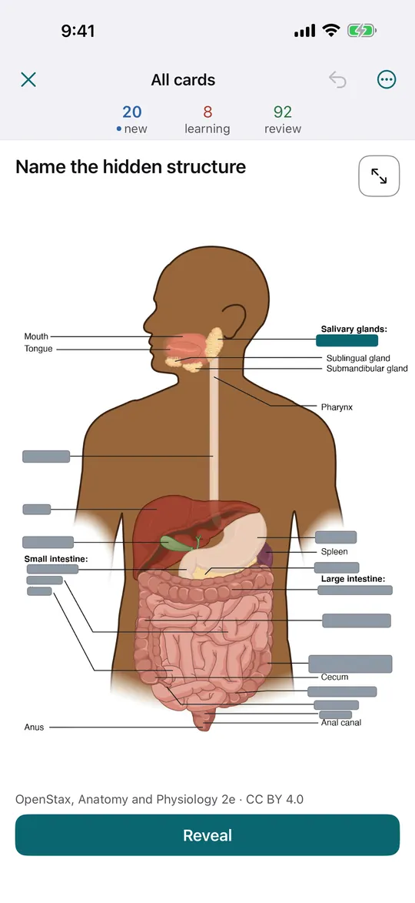
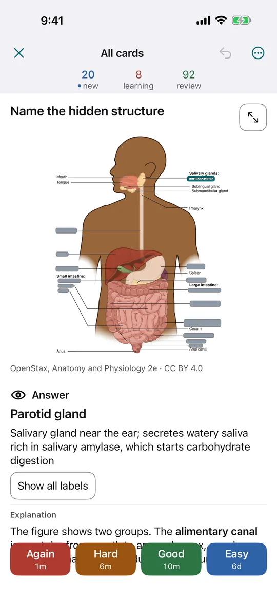
Study the sciences of medical-school admission with your fingers: uncover a diagram's labels, build an equation from tiles, put a pathway in order, draw it from memory.
An iPhone app with a built-in deck of 2,508 cards in 114 units, made from openly licensed textbooks and checked against them. Free, offline, no account.
In private beta. The App Store comes next.
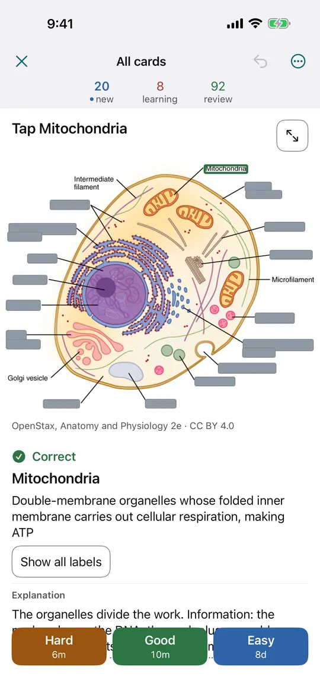
Much of what the exam asks is a picture, a formula or a process, and typing is a poor way to recall any of them. Tsunami gives each its own way to answer, and after every answer, an explanation.
Tap
A textbook figure with its labels covered. Name the highlighted structure and tap to uncover it, or read a name and tap where it belongs. Pinch, pan or open the figure full screen.


Fill
The formula is typeset with blanks. Tap tiles into them, then Check. The answer shows the full formula, marks any blank you got wrong and names every symbol.
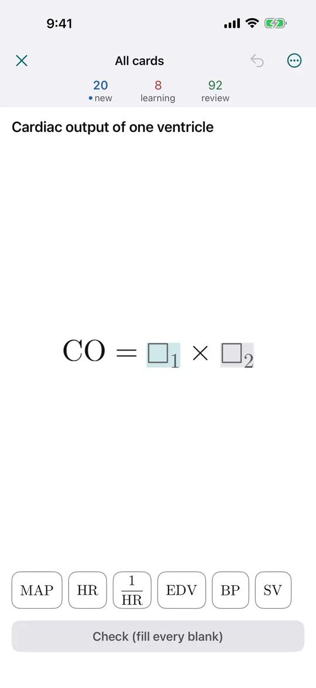
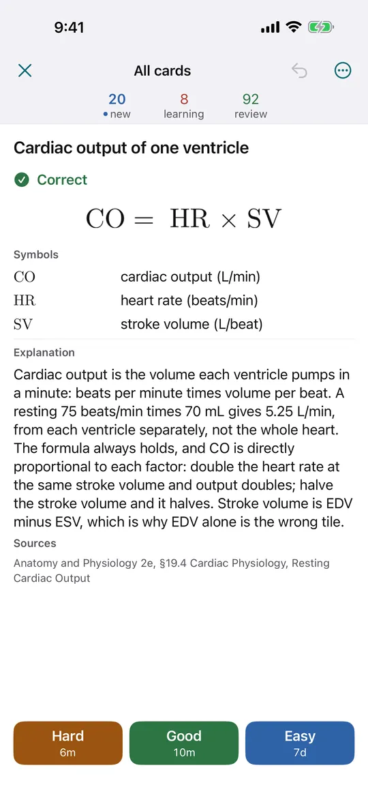
Choose
A question, often a short scenario with a table or a figure to reason through. One tap answers. Then every option says why it is right or what makes it wrong.
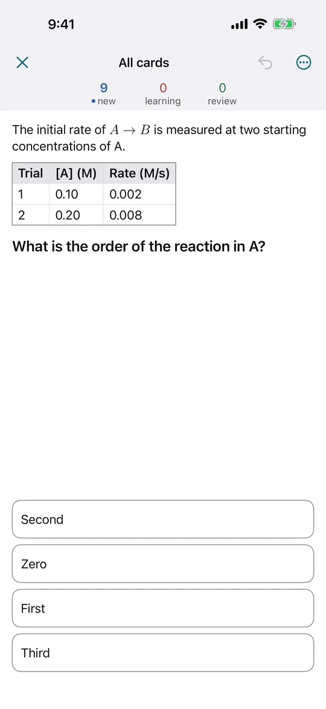
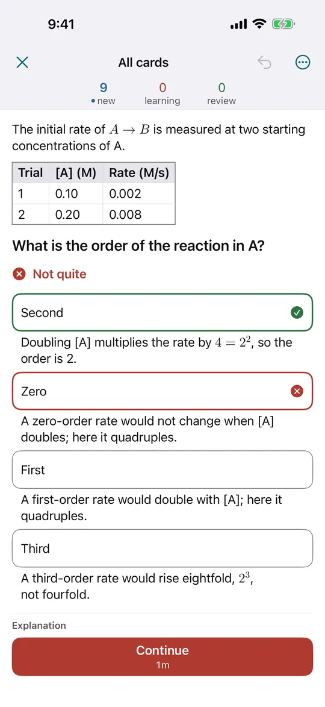
Drag
The steps of a process, shuffled. Drag them into order, or tap a row and then its place. Check marks each step right or wrong and shows the right order.
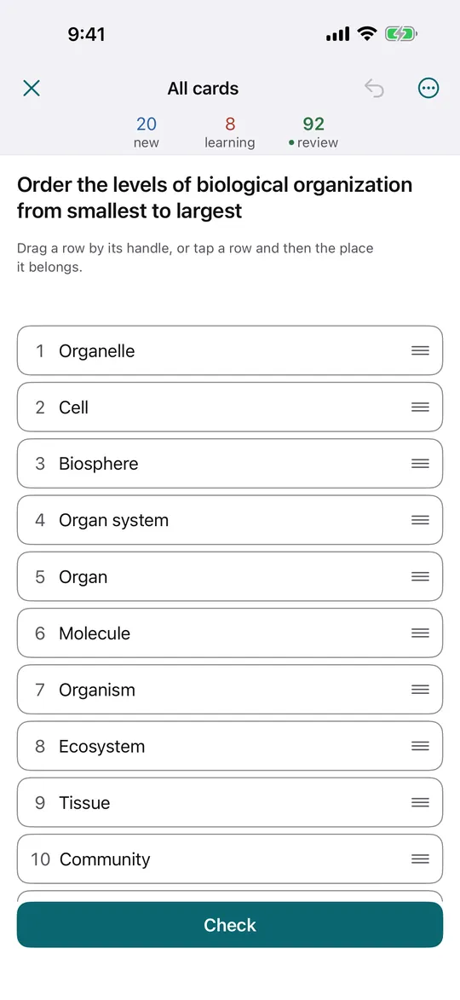
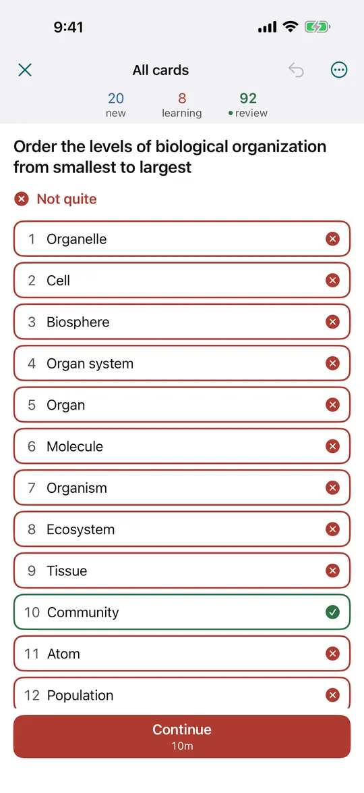
Draw
Draw a pathway or a structure from memory on white paper, then reveal a picture of the answer and lay your drawing over it. A checklist says what a full answer includes. Nothing you draw is saved.
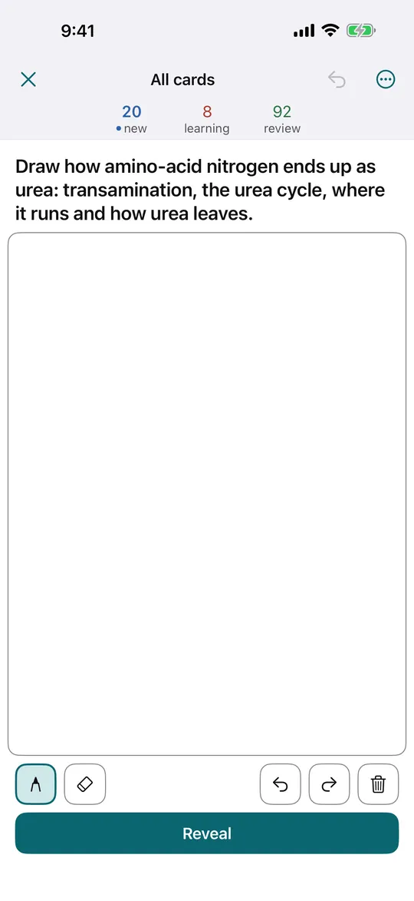
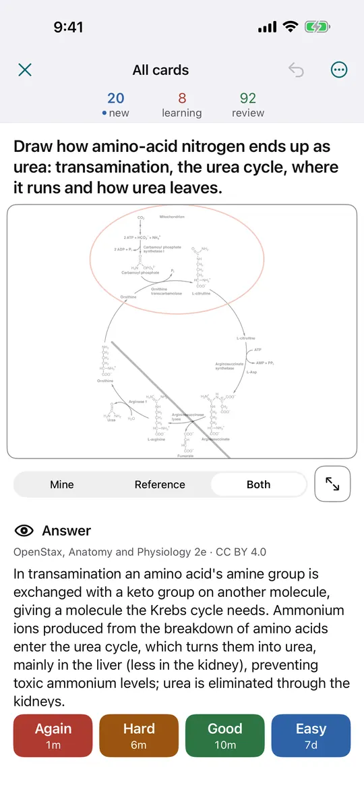
The deck also holds 36 reading passages from the humanities and the social sciences, each with questions on what it says, what follows from it and how its reasoning applies to a new case. Each passage is cut from a public-domain or openly licensed work, whole sentences in the author's order, never rewritten.
Passages are practice, not memory, so they are not scheduled like cards. The next one is always one you have not read yet; once you have read them all, they come round again oldest first. A clock counts up beside a ten-minute mark and stops nothing. The right answers and the reason for every option appear when you finish.
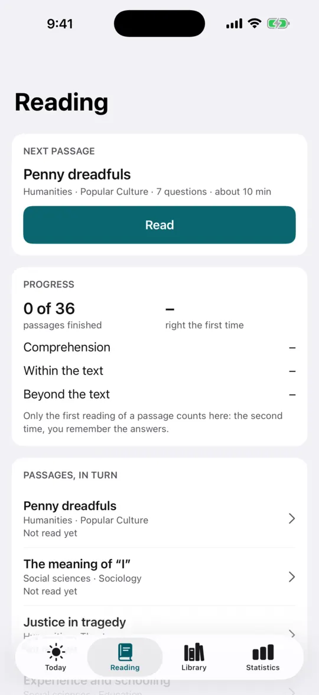

Scheduling is FSRS, the spaced-repetition algorithm Anki also offers: each card returns shortly before you would forget it, so reviews stay few. Want a topic right now? Study any unit, section or topic on top of the day's suggestion; its new cards are extra and the path stays where it was. Statistics show your streak, a calendar, the reviews coming up and how much you remember.
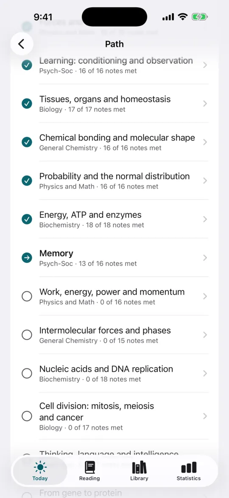
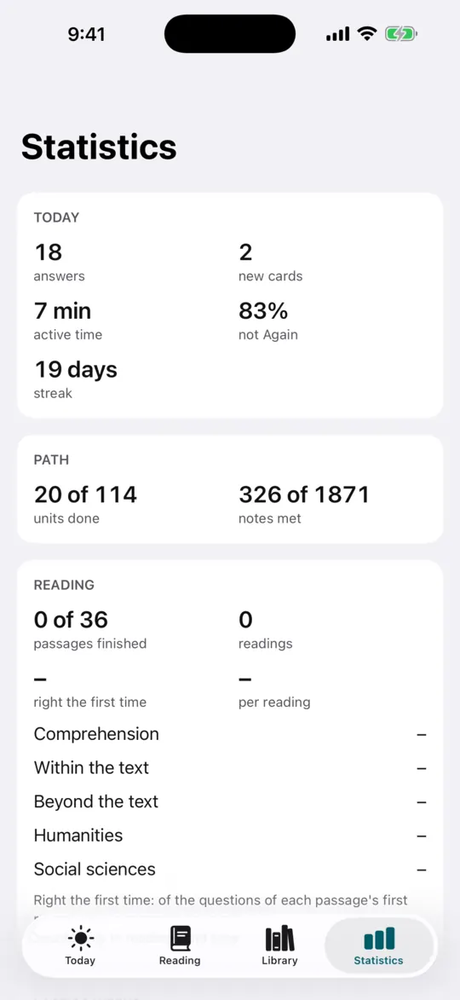
The back of every card explains the answer, the same way whether you were right or wrong, and names the textbook section it comes from. A right answer is no reason to explain less: a guess is right a quarter of the time.
Every card is written by one reader and checked against its textbook section by a second reader who did not write it. Every picture is checked against its section too. A card or picture changed after its check is checked again before it ships.
A diagram's labels are the labels printed in the figure. Under every picture is who made it, where it comes from and its licence. The 49 sources and their licences are on the credits page.

This website loads nothing from anyone else either. Read the privacy policy.
Tsunami is in a private beta on iPhone. The App Store comes next; there is no date yet, and this page will link to it once it is there. It is a way to study, and it promises no score.
Found a wrong card or a bug? Here is how to report it.